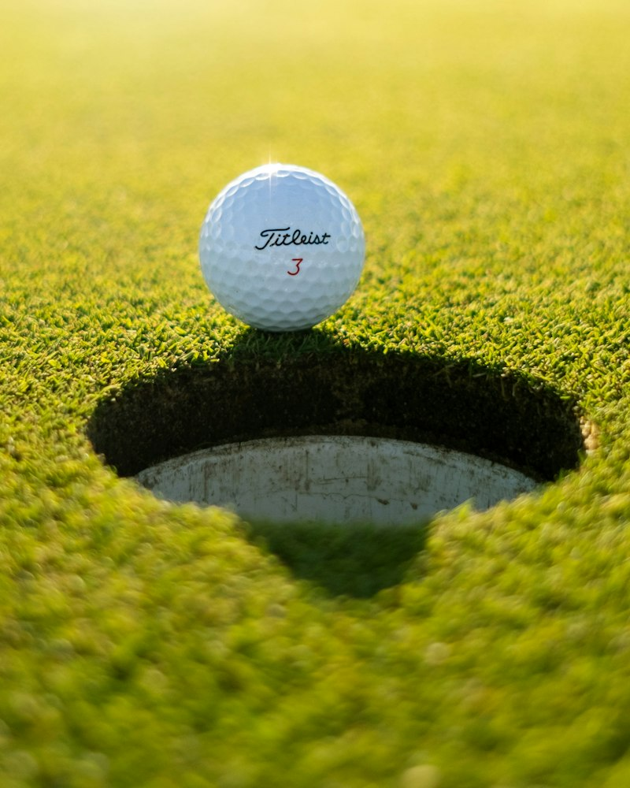

L'enseignant
Dominique Tavernini
Enseignant de golf diplômé d'État et membre de la PGA France, j'accompagne les golfeurs de tous niveaux sur les golfs du Var et de la région.

Brevet d'État depuis 2006
Mon parcours
Du terrain de basket au green
Éducateur sportif et entraîneur de basket, j'ai décidé de faire du golf mon métier.
En 1992, je suis diplômé de l'Académie internationale des métiers du golf de Montpellier, en tant qu'administrateur de golf. J'enseigne ensuite le golf comme éducateur sportif pendant une quinzaine d'années, avant d'obtenir en 2006 le Brevet d'État à l'École fédérale de Vichy.
Ma mission : partager mon savoir-faire dans la bonne humeur. Mon objectif : vous aider à progresser et à vous perfectionner, pour prendre encore plus de plaisir à découvrir de nouveaux parcours.
- 1992
- Administrateur de golf, Académie internationale des métiers du golf de Montpellier
- 2006
- Brevet d'État d'enseignant de golf, École fédérale de Vichy
- BPJEPS
- Brevet professionnel de la jeunesse, de l'éducation populaire et du sport, mention golf
- PGA
- Membre de la PGA France, l'association des professionnels du golf
Formation continue
Des masterclasses auprès de spécialistes
Biomécanique, petit jeu, préparation mentale : je continue de me former pour enrichir mon enseignement.
Biomécanique appliquée
Jean-Jacques Rivet
Entraînement du petit jeu
Fabrice Tarnaud
Golf et préparation mentale
Anthony Girod
Technique et pédagogie du petit jeu
Jean-Étienne Lafitte
Préparation mentale du golfeur
Michel Teichet
Ma méthode
À la portée de tous les golfeurs.
Du débutant au très bon joueur, du sportif au sédentaire : ma méthode vise des progrès durables, ou un retour rapide à votre meilleur niveau.
Tout part d'une bonne mise en place, construite sur des fondamentaux simples, souvent oubliés, pour éviter les défauts de l'autodidacte. Certains exercices peuvent sembler loin du golf : ils construisent pourtant la maîtrise de vos mouvements.
Pas de swing « dernier cri » imposé : les fondamentaux sont adaptés à votre morphologie. Et parce que l'essentiel du score se joue près du drapeau, mon enseignement démarre du green vers le départ.
Le green
-
Le putting
Lire les pentes, doser la vitesse, rentrer les putts courts.
-
Le petit jeu
Chips, pitchs et sorties de bunker pour se rapprocher du drapeau.
-
Le jeu de fers
Des trajectoires régulières pour toucher plus de greens.
-
La mise en jeu
Un départ fiable pour bien lancer chaque trou.
Le départ
Réservation
On commence par une leçon ?
Appelez-moi ou envoyez une demande : nous fixons ensemble le créneau et le golf qui vous conviennent.